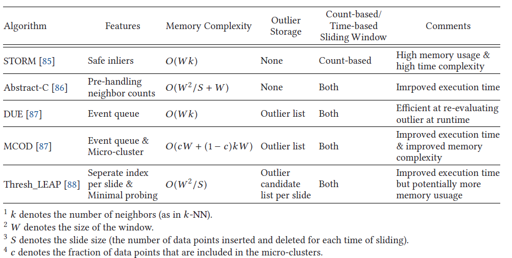
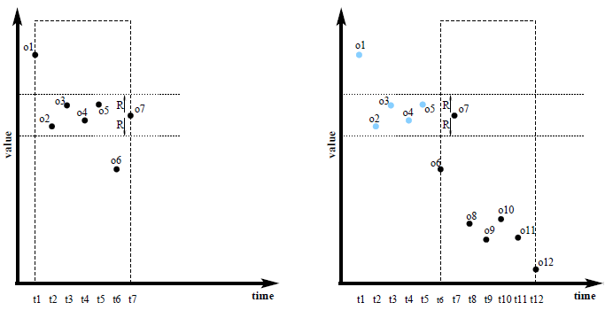
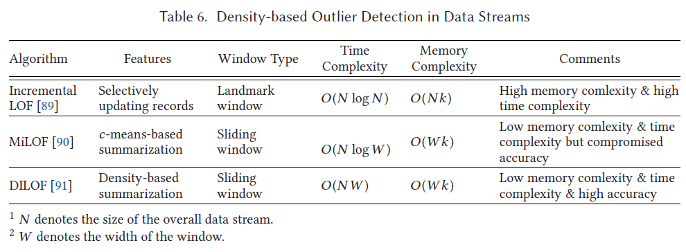
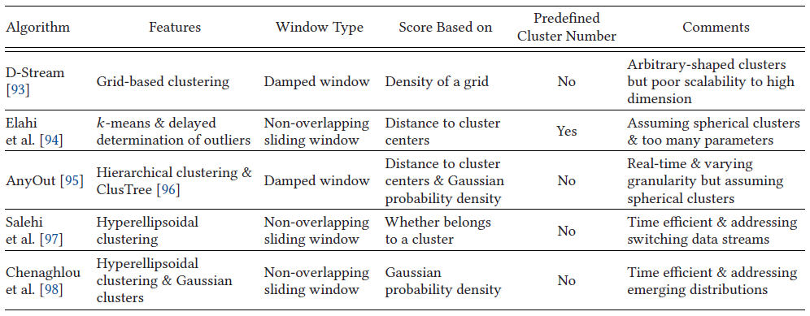

3k words in total, 12 minutes required. Boukerche, Azzedine, Lining Zheng, and Omar Alfandi. “Outlier Detection: Methods, Models, and Classification.” ACM Computing Surveys 53, no. 3 (May 31, 2021): 1–37. https://doi.org/10.1145/3381028. 文章较长，笔记分为多篇，下一篇。 连续无界的流数据场景下异常检测的两个挑战： 受限的存储空间 - 无法存储全部数据 高效性计算保证 Windowing技术被用于增量更新模型和进行检测，Salehi等人[1]总结了以下类型的windows： Landmark window: 特定点为landmark，window记录了当前点到landmark间的所有序列 Sliding window: 分为count-based和time-based，固定长度/大小 Damped window: 更近的点有更大的权重 Adaptive window: 和sliding window类似，但是长度根据数据速度发生改变 基于距离的方法基于距离的方法一览 注意，这里的distance-based方法不是基于$k$-NN的，而是基于$r$-NN的，即在$r$范围内的近邻点。离群点的定义为在$r$为半径的范围内的点少于$p$个。该定义最早可以追溯到VLDB98的工作[13]。 这类方法比较高效，是因为outlier score相对于已经探索的数据库部分而言是单调非增的，因此可以激活一些pruning rules[1]。 Distance-based outliers have robust theoretical foundations, since they are a generalization of different statistical tests. Furthermore, they are computationally efficient, since distance-based outlier scores are a monotonic non-increasing function of the portion of the database already explored. STROMSTROM首次提出了和sliding window相关的outlier querying，即outlier和其所处的window有关系，而不是传统的对每个incoming point立即做出判定。 The underlying intuition is that, due to stream evolution, object properties can change over time and, hence, evaluating an object for outlierness when it arrives, although meaningful, can be reductive in some contexts and sometimes misleading. $o_7$随着时间的迁移从inlier变成了outlier 保存的数据结构为Index Stream Buffer[1]： 每个点上距离其小于$r$的实例为其邻居； 对每个点保存其前面的邻居的列表，保存其后面的邻居的数量 如果一个点后续有超过$p$个邻居，则其必定为inlier。 方法的缺点是空间和时间复杂度都相对较高。 Abstract-C随着数据的过期，计算复杂度会提升 (需要对邻居的信息进行更新)。 Abstract-C[2]对每个点的生命周期进行计算，对其未来几个时间窗口的临近点个数进行计算——如果这些点不会被删除，才会考虑对其近邻点个数的情况进行后续的更新。 这个方法仅记录count不需要记录准确的邻居的list。Abstract-C相比于STORM更高效需要更少的空间。 DUEDUE[3]维护一个event queue，用于存储unsafe inliers，即没有超过k个后续的近邻 —— 优先级由其前面的近邻点的过期时间决定。此外，维护一个outlier list。 当window移动时，event queue被更新——一些unsafe inliers被移入到outlier list中。新加入的点的前近邻点和后邻近点被搜索，并根据他们的近邻点情况被加入到inlier或者outlier的list中。那些和新加入点是近邻的点也会被更新。 MCOD相比于DUE，MCOD[3]使用了微簇 (micro-cluster) 来加快range query search。一个微簇以一个半径为$r/2$的数据点为中心，包含至少$k+1$个成员点。由于距离度量的三角不等式，每对数据点的距离都小于$r$，因此属于此类微簇的数据实例可以保证必是inliers。微簇以外的点被称为free points，他们的处理不同 (可能为inlier或者outlier)。 由于减少了邻居搜索，MCOD在执行时间方面具有优势。MCOD需要更少的内存空间，因为微集群内的点不需要额外的邻居列表。 Thresh_LEAP划分为若干个slides的基本单元，每个单元内记录了每个点的邻居列表。同时，每个slide记录了trigger列表来记录那些可能会因为slide过期而发生更新的数据点。 其思想在于先搜索更靠近的slide内的近邻点，在探索时间上更久远的slide (from newest to oldest)，直到找到$k$个邻居[4]。 当一个slide过期，trigger列表的点需要重新评估，如果一个点少于$k$个邻居，只对后续的slides进行探索因为前面的slides在上面的搜索过程中已经探索了。 总结尽管基于距离的技术对于数据流来说很容易理解并且计算效率很高，但它们也有局限性。首先，很难为不同的数据集找到合适的参数$r$和$p$ 值。此外，它假设整个数据集中的密度是均匀的。 基于密度的方法 (LOF扩展)基于密度的方法一览 基于kNN近邻点的密度进行异常点分析。 LOF usually achieves good performance in datasets with non-homogeneous densities. This property also holds when it is used for data streams. Incremental LOFIncremental LOF[5]旨在提高repeat LOF的计算效率，其基于一个重要的观察，即插入和删除点只能潜在地影响有限数量的数据点。更具体地说，数据实例$i$的插入或删除会影响$i$的k-reverse-nearest-neighbors (k-RNN)的k-distance。k-distance的变化导致可达距离的变化，从而导致$i$的k-RNN的k-RNN的LRD变化，因而其LOF分数需要相应修改。 因此，更加高效的kNN和k-RNN search方法 (复杂度为$O(\log N)$的) 被使用。 MiLOFMiLOF[6]解决了memory受限的问题。它将有限的memory分成两部分，$b$个最新的点和$c$个摘要点 (summaries)。每当memory不够时，$b$个最新点钟更老的一半通过c-means被压缩成$c$个代表点 (后续进行合并)。 这$c$个代表点参加后续的k-distance，reachability distance，LRD的计算，但是其不再使用更精细的近邻点，而是用其簇信息。他们的c-means技术考虑了一个区域可能包含outliers的可能性，因而提出的技术旨在使得有更大可能包含outliers的区域更高概率地被保持原貌而不被摘要。 但是，由于摘要，准确性不可避免地会受到影响，这可能无法有效地保持数据实例的密度。 DILOFMiLOF和DILOF[7]都通过对部分数据点摘要来克服Incremental LOF中内存和执行时间的限制，这允许在内存中仅保留有限数量的数据点。MiLOF采用了一种density-based sampling技术。 分为summarization和detection两个阶段： summarization阶段，固定长度为$W$的window内，$W/4$从最老的$W/2$个点中被采样 (density-based，目标是最大限度保有原有的点的样貌，即一个组合优化问题)，剩余的没有采样的$W/4$被直接移除和释放。 detection方法和Incremental LOF相似，仅对可能受到插入或者删除的点进行更新。 由于更好的摘要技术，DILOF在AUC测量的准确度方面往往优于MiLOF。 基于聚类的方法基于聚类的方法一览 正如我们提及的，聚类方法的时间复杂度更低，粗粒度了pairwise的计算代价——但是因而牺牲了更细粒度的分析。基于聚类的异常检测自然和使用的聚类算法有很大的干系。 在流数据场景下，新的挑战包括scalability和有效的incremental strategies。 D-StreamGrid-based approach：将进入点映射到grid cell上。针对grids进行聚类，并将“sporadic” (偶尔发生的) grid认为是outliers[8]。 具体而言，对每个点赋予一个density coefficient，随着时间而衰减，以捕获数据流的动态改变。每个grid的density被定义为映射的点的density coefficient的和，并随着新点的进入而被更新。根据grid density，点被分为dense grids, sparse grids, and transitional grids。 clustering方法：一组dense grids被合并，其周围围绕着sparser grids。假设为，outliers更容易被映射到点数很少的grids——一种特例是当点锁着time-decaying导致grids的density很低时，这个grid不会被认定是outlier的grid。特例在threshold function中被处理。 Elahi et al.基于streaming k-means：维护两组cluster centers，一组来自于当前的chunks (actual cluster centers)，一组来自于历史数据 (the average of previous updated cluster centers and current actual cluster centers)[9]。 candidate outliers由点到updated cluster center的距离来判定。算法设置了一个$L$ chunks的缓冲，以准确判定outlier。 缺陷：需要设置一些超参数，很难应对spherical shape的clusters的情形 (使用k-means)。 AnyOut利用树结构ClusTree来保存层次聚类的结果[10]：每个树节点是一个tuple，记录对应的cluster的特征包括1) cluster基数，2) linear sum of points，3) square sum of points。 利用树结构，anyout可以自上向下搜索树结构，如果时间足够搜索越深，得到的结果粒度更细。 两种outlier score计算方法： 点到cluster centroid的距离 (mean outlier score) 基于data point的高斯概率分布 weighted ensemble framework对窗口进行HyCARCE聚类，以捕获正常行为[11]。 HyCARCE is a density-based hyperellipsoidal clustering algorithm without predefined cluster numbers. HyCARCE outputs a set of cluster boundaries, which can be viewed as the built “clustering model.” 每个窗口的对应模型被保存在内存中，以进行ensemble。 ensemble的weight的推导是基于两个聚类模型 (clustering models) 的相似性 (focal distance) 来定义的。更具体地说，对于两个聚类模型，首先计算每对超椭球边界的距离，每个边界来自不同的聚类模型。 然后从最短的距离开始以贪婪的方式选择成对的边界。 最后，结果对的距离之和的倒数被用作两个聚类模型之间的相似度。 相当于每个新点需要计算是否从属于某个窗口内的某个聚类——基于thresholding。weight的分配是基于当前clustering model和previous clustering model的距离。 Chenaghlou et al.同样基于HyCARCE算法[12]。不同点在于，其正常pattern是基于高斯分布来建模的 (包括outlier score也是通过cluster的高斯pdf来计算的)。 判断新窗口的点是否fit正常cluster的高斯分布，两个准侧： fit的点数不能太少，基于Cumulative Binomial Probability (CBP) function 数据点必须分散分布，transforming the data points into standard Gaussian distributions, then into a spherical coordinate system 如果fit测试通过，则进行HyCARCE聚类，更新模型。 最后，一个数据点的得分是每个高斯聚类下该数据点被观察到的概率中的最大值。 继续阅读下一篇。 扩展阅读1.Fabrizio Angiulli and Fabio Fassetti. 2007. Detecting distance-based outliers in streams of data. In CIKM, 811–820. ↩2.Di Yang et al. 2009. Neighbor-based pattern detection for windows over streaming data. In EDBT, 529–540. ↩3.Maria Kontaki et al. 2011. Continuous monitoring of distance-based outliers over data streams. In ICDE, 135–146. ↩4.Lei Cao et al. 2014. Scalable distance-based outlier detection over high-volume data streams. In ICDE, 76–87. ↩5.Dragoljub Pokrajac, Aleksandar Lazarevic, and Longin Jan Latecki. 2007. Incremental local outlier detection for data streams. In CIDM, 504–515. ↩6.Mahsa Salehi, Christopher Leckie, James C. Bezdek, Tharshan Vaithianathan, and Xuyun Zhang. 2016. Fast memory efficient local outlier detection in data streams. IEEE Trans. Knowl. Data Eng. 28, 12 (2016), 3246–3260. ↩7.Gyoung S. Na, Donghyun Kim, and Hwanjo Yu. 2018. DILOF: Effective and memory efficient local outlier detection in data streams. In KDD, 1993–2002. ↩8.Yixin Chen and Li Tu. 2007. Density-based clustering for real-time stream data. In KDD, 133–142. ↩9.Manzoor Elahi et al. 2008. Efficient clustering-based outlier detection algorithm for dynamic data stream. In FSKD, 298–304. ↩10.Ira Assent, Philipp Kranen, Corinna Baldauf, and Thomas Seidl. 2012. Anyout: Anytime outlier detection on streaming data. In DASFAA, 228–242. ↩11.Mahsa Salehi, Christopher A. Leckie, Masud Moshtaghi, and Tharshan Vaithianathan. 2014. A relevance weighted ensemble model for anomaly detection in switching data streams. In PAKDD, 461–473. ↩12.Milad Chenaghlou et al. 2017. An efficient method for anomaly detection in non-stationary data streams. In GLOBECOM, 1–6. ↩13.E. Knorr and R. Ng. Algorithms for mining distance-based outliers in large datasets. 1998. In VLDB, pages 392-403. ↩ ← Previous Post Next Post→ Table of Contents 基于距离的方法STROMAbstract-CDUEMCODThresh_LEAP总结基于密度的方法 (LOF扩展)Incremental LOFMiLOFDILOF基于聚类的方法D-StreamElahi et al.AnyOutweighted ensemble frameworkChenaghlou et al.扩展阅读